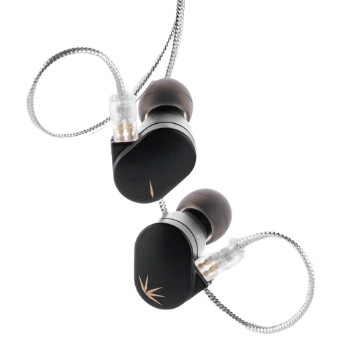

Earphones
Moondrop Chu
The Moondrop Chu earphones promise a blend of style and substance, with a sleek design and a focus on delivering impressive sound quality. These earphones aim to provide a delightful listening experience for music enthusiasts.
Color